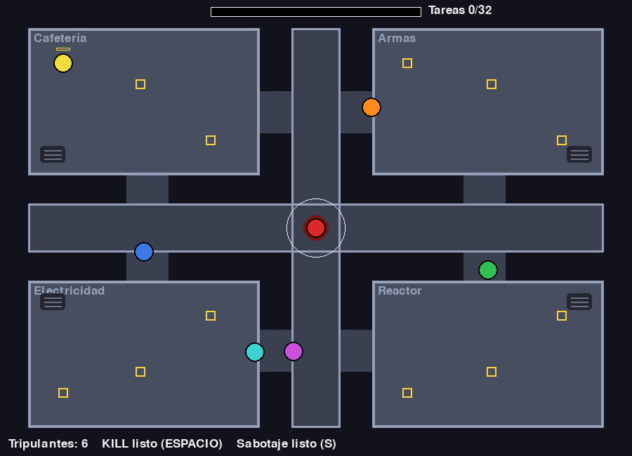

- 6 tripulantes bots caminan entre tareas y las hacen de verdad: si llenan la barra de tareas, perdiste.
- Mátalos con ESPACIO sin que te vean. Apaga las luces con S. Salta entre salas por las ventilaciones con V.
- Si un bot ve un cuerpo o te ve, corre al botón y hay reunión: votan por sospecha y te pueden expulsar.
- 2 mapas (nave chica y nave grande con cámara que te sigue) y dificultad Fácil / Normal / Difícil.
- Sonidos hechos con números: kill, alarma, reunión, vent, luces.
Necesita: Python 3 + pygame · Linux, Windows y Mac
⬇ Descargar .zip (13 KB) 🎮 Jugar en el navegador▶️ Cómo jugar
- Descarga y descomprime el zip.
- Instala pygame:
pip install pygame - Corre
python3 impostor.py(en Windows:python impostor.py; en Linux/Mac también sirve./jugar.sh).
🎮 Controles
| Flechas | moverte |
| ESPACIO | matar |
| S | apagar luces |
| V | ventilación |
| 1 / 2 | elegir mapa (en el menú) |
| D | dificultad (en el menú) |
| ENTER | empezar |
| R | reiniciar |
| M | volver al menú |
| ESC | salir |
⌨️ Cambiar los controles
Abre controles.txt (está junto a impostor.py) y cambia la tecla después del =. Así viene de fábrica:
izquierda = left derecha = right arriba = up abajo = down matar = space sabotaje = s vent = v mapa1 = 1 mapa2 = 2 dificultad = d empezar = return reiniciar = r menu = m salir = escape
Nombres válidos: letras (a, b...), flechas (up, down, left, right), space, return, tab, left shift, left ctrl y números. Si escribes una tecla que no existe, el juego avisa y usa la de siempre.
🔧 Para cambiar cómo se siente
Arriba de impostor.py están VEL_BOT, COOLDOWN_KILL, VISION_BOT, DURACION_LUCES, CANTIDAD_BOTS... Los mapas están en mapa_chico() y mapa_grande().